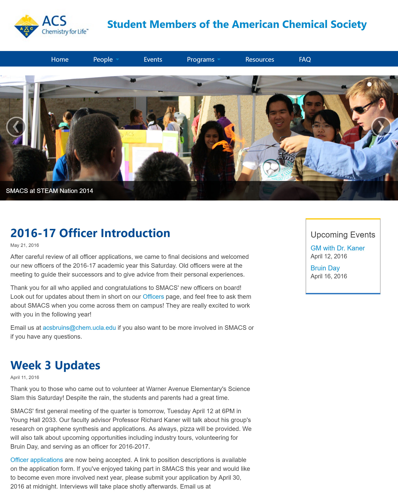
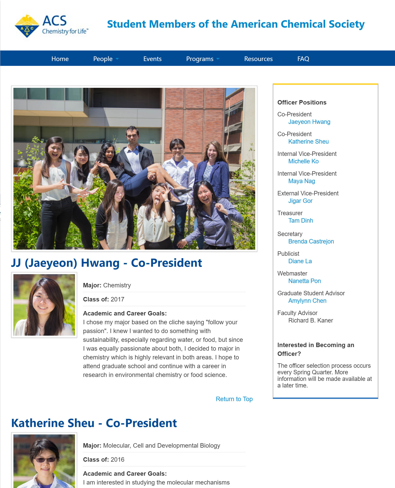

ACS UCLA Chapter
- HTML
- CSS


- HTML
- CSS
SMACS is a UCLA club providing extracurricular education in chemistry topics and bringing students together in chemistry fairs and competitions. The SMACS website was redesigned to better provide news and resources to students and give club officers more control over site content.
View Live Site ≫